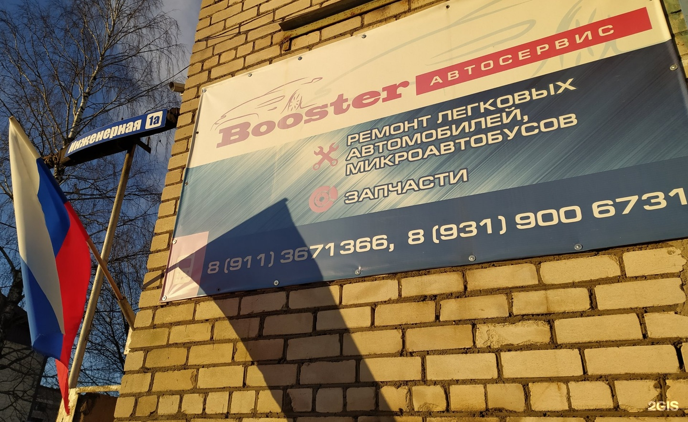
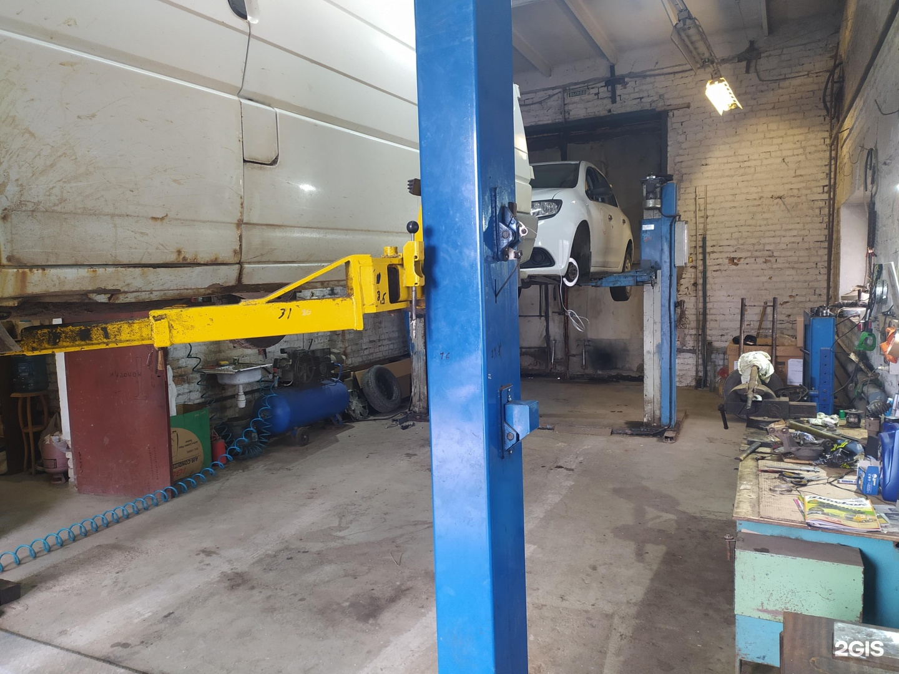
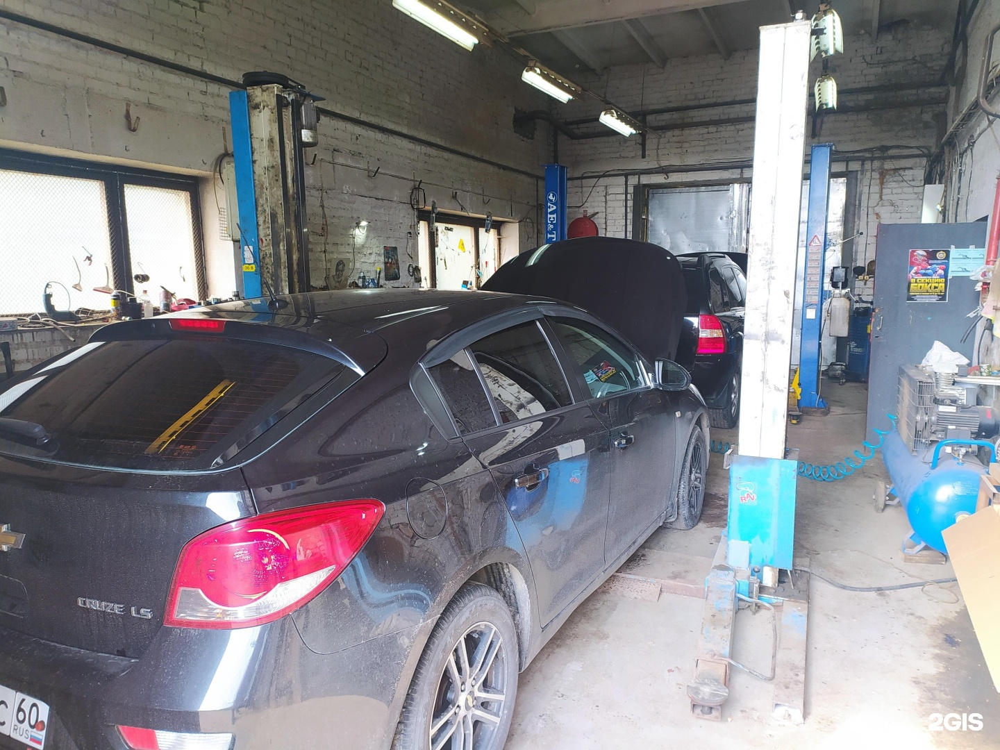
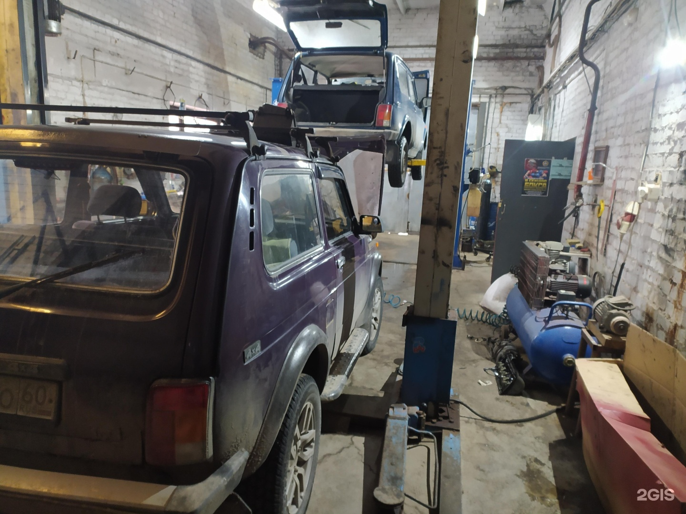

В отзывах положительно оценивают работы по замене ремня ГРМ.
Полный отзыв в 2ГИСBooster
Подвеска, тюнинг и работы с салоном
+7 (931) 900-67-31ТелефонРемонт ходовой и пневмоподвески, тюнинг двигателя и выхлопной системы. Отдельно можно обсудить перетяжку и шумоизоляцию салона.

Адрес
Псков, улица Декабристов, 56 к1
Часы работы
Пн–Пт 10:00–19:00
Демо-концепт · текущий прайс ещё не подтверждён
Направления
С чем можно обратиться
Ремонт ходовой части автомобиля
Ремонт пневмоподвески
Перетяжка салона
Тюнинг выхлопной системы
Тюнинг двигателя
Шумоизоляция салона
Прайс
Услуги и цены
Фотографии
Снаружи и внутри
Фотографии из карточки бизнеса. Снимки не подтверждают актуальность цен.



Отзывы
Что отмечают посетители
Один из клиентов отмечает соблюдение заранее согласованной стоимости.
Полный отзыв в 2ГИСВстречаются положительные оценки внимательности мастеров к деталям.
Полный отзыв в 2ГИСПересказ субъективных мнений без имён авторов. Полные отзывы — в 2ГИС.
Контакты
Адрес и связь
Часы работы
Пн–Пт 10:00–19:00
Телефон+7 (931) 900-67-31
Обсудите ремонт или доработки по телефону
Позвонить